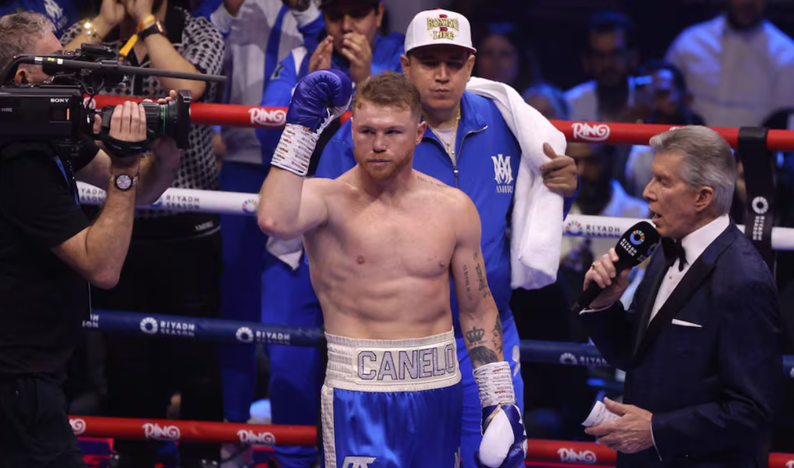

Canelo Álvarez derrota a William Scull por decisión unánime
Saúl 'Canelo' Álvarez lo hizo de nuevo. Luego de doce episodios intensos en Arabia Saudita, el mexicano demostró ante millones ser un histórico del boxeo.
Al lograr además de una victoria por decisión unánime ante William Scull, el título de campeón indiscutido de los supermedianos.
El combate estelar en Riad, Arabia Saudita comenzó caliente, con dos hombres dispuestos a dejar todo en el cuadrilátero y salir de la ANB Arena con el título de campeón indiscutido de los supermedianos
El púgil tapatío, de 34 años, ostenta el título de campeón mundial en la división de peso supermediano, con los cinturones de la AMB, CMB, OMB y ahora agrega el de la FIB gracias al triunfo sobre Scull,
Después de los primeros tres episodios, fue Canelo Álvarez quien se vio mejor en el cuadrilátero al lograr conectar el cuerpo del cubano, que perdió movilidad lo que lo hizo ser un blanco fácil para el tapatío.
El castigo marcado por Álvarez hasta el quinto round, tuvo respuesta por parte de William Scull que aprovechó la distancia para atacar al mexicano y regalar poderosos intercambios en el centro del ring al cierre del cuarto.
El buen recorrer de Scull por el ring mermó el ritmo de la pelea, y mostró a un Canelo Álvarez cansado, disminuyendo el daño sobre la figura del isleño quien tomó la distancia como fórmula para desesperar al mexicano.
El séptimo round significó el mejor para William Scull, logrando impactar en repetidas ocasiones a Canelo, causando frustración en el tapatío.
A la altura del décimo, Álvarez recuperó la memoria y logró conectar la mayor cantidad de golpes a la figura del cubano, quien pese a huir del combate recibió castigo en el rostro.
Con todo en juego, el último round Canelo Álvarez se lanzó al frente, persiguiendo por cada rincón a un temeroso Scull, quien se olvidó de pelar y se preocupó por no caer ante los ataques del mexicano.